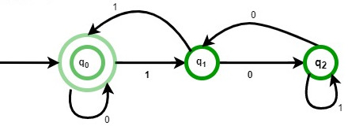
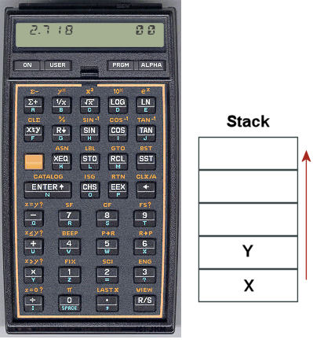

Свёртка списков
foldr, scanr, foldl, scanl. Вычислите несколько примеров в интерпретаторе:foldr (+) 0 [1..5] foldr (+) 10 [1..5] foldr (-) 0 [1..5] foldr (-) 10 [1..5] foldl (-) 0 [1..5] foldl (-) 10 [1..5] scanr (+) 0 [1..5] scanl (-) 0 [1..5]


foldr и foldl, а также с такими примерами:
Функция форматированного вывода определена в модулеfoldl (printf "f(%v,%v)") "0" [1..5] foldr (printf "f(%v,%v)") "0" [1..5] scanl (printf "f(%v,%v)") "0" [1..5] scanf (printf "f(%v,%v)") "0" [1..5]
Text.Printf.
fromBase, транслирующую список цифр в заданной системе счисления в целое число:
Убедитесь в том, что эта функция является обратной функцииfromBase 10 [1,2,3] ==> 123 fromBase 2 [1,1,0,1] ==> 13
toBase из предыдущего занятия.
scanl.minCount :: Ord a => [a] -> (a, Int) minCount [] = error "List is empty" minCount (x:xs) = foldl count _ xs where count (r, c) x | x == r = ... | x < r = ... | otherwise = ...
Вычислительная мощность свёртки
Свёртка (катаморфизм) — это абстракция последовательной обработки индуктивных данных. Это означает, что любую задачу, сводимую к обработке списка элемент за элементом, можно решить при помощи свёртки.
map, (++), reverse и filter, используя явную рекурсию и вычислительные схемы в качестве подсказок:foldr и scanr, foldl и scanl. map, filter, reverse, (++), any и all, maximum и minimum, length, scanr и scanl. Для этого нужно подобрать подходящую сворачивающую функцию f и начальное значение x0.Автоматное программирование
Очень широкий класс задач программирования и автоматизации самых разнообразных процессов решается с помощью автоматного подхода. Автоматом называют вычислитель, имеющий внутреннее состояние. Такой вычислитель принимает поток сигналов, событий или символов, который он последовательно обрабатывает, меняя своё состояние. Вот некоторые области применения автоматного подхода:
- вендинговые аппараты (например, кофе-машины);
- организация работы сфетофоров;
- логические блоки в видеоиграх и в АСУ;
- поиск подстрок в тексте, распознавание регулярных выражений;
- лексическиц анализ
- организация работы контроллеров центрального процессора;
- анализ протоколов передачи данных (TCP/IP и т. д.);
- интерпретация стеково-ориентированных языков программирования.
Автомат полностью определяется набором допустимых состояний, набором допустимых входных сигналов (этот набор называют алфавитом), функцией перехода, начальным состоянием, а также состояниями аварийной остановки и успешного завершения работы. Самая главная часть автомата — функция перехода. Она задаёт переход из одного состояния в другое в зависимости от пришедшего сигнала или события и, возможно, выполняет какие-то действия. Давайте определим тип для произвольного автомата:
При этом множество допустимых входных символов автомата можно задать тремя способами:data Automat s i = Automat { alpha :: Alphabeth i -- допустимые символы , delta :: s -> i -> s -- функция перехода , start :: s -- начальное состояние , stop :: [s] -- останавливающие состояния , final :: [s] -- конечные состояния }
Определение этих типов может выглядеть длинновато и казаться сложным, но на самом деле эта запись точно описывает необходимые для автомата элементы. Здесь параметры типаdata Alphabeth i = Set [i] -- конечный набор | Only (i -> Bool) -- предикат | Any -- любые символы
s и i задают типы, соответственно, для возможных состояний автомата и входных данных.
Самый простой вычислитель — конечный автомат, который можно реализовать как программным способом, так и аппаратно. Набор его возможных состояний конечен и известен на этапе разработки. Преимущества конечных автоматов состоят в исключительной надёжности и минимальности необходимых для работы вычислительных мощностей. Их редко приходится писать вручную, чаще всего они играют роль внутреннего представления прекомпилированных алгоритмов и программ.
Определим в качестве примера конечный автомат, который вычисляет остаток от деления на 3 числа, записанного в двоичной форме. Он принимает набор символов из множества

Работа автомата состоит в переборе элементов входного потока данных и последовательной смене состояния.
Этот вычислительный процесс соответствует свёртке потока сигналов с помощью функции перехода автомата.
Вот как можно определить его с помощью нашего типа:
mod3 :: Automat Int Int mod3 = Automat (Set [0,1]) f 0 [] [0,1,2] where f 0 0 = 0 f 0 1 = 1 f 1 0 = 2 f 1 1 = 0 f 2 0 = 1 f 2 1 = 2
scanA, которая будет запускать автомат для произвольного потока данных, возвращая поток этих же данных, сопровождаемых состояниями автомата:
scanA :: (Eq s, Eq i) => Automat s i -> [i] -> [(s, i)] scanA m xs = takeWhile (not . halt) $ zip states inputs where -- поток допустимых символов inputs = case alpha m of Any -> xs Set as -> filter (`elem` as) xs Only p -> filter p xs -- поток состояний автомата states = ... -- условие остановки работы halt = ...
Проверьте правильность работы автоматаscanA mod3 [1,1,0,1,0,1] [(1,1),(0,1),(0,0),(1,1),(2,0),(2,1)]
mod3 на последовательности натуральных чисел от 0 до 10.
scanA несложно написать два специальных исполнителя для работы с конечными автоматами: runA, возвращающий только последнее состояние машины и testA, который возвращает значение типа Bool, и позволяет использовать автоматы как распознаватели последовательностей (строк).runA :: (Eq s, Eq i) => Automat s i -> [i] -> s testA :: (Eq s, Eq i) => Automat s i -> [i] -> Bool
printA для вывода последовательности шагов работы автомата.
Вывести строку можно с помощью функцииprintA mod3 [1,0,1,0,1] 1 1 2 0 2 1 1 0 0 1
putStrLn, а применить её к элементам списка функцией mapM_. - соответствуют регулярному выражению "ab+a" (
"aba" ,"abba" ,"abbbba" и т. п.); - содержат подстроку "abba" в любой позици;
- соответствуют регулярному выражению "(aba)+" (
"aba" ,"abaaba" ,"abaabaaba" и т. п.); - оканчиваются на "aaa";
- начинаются на "bbb";
- начинаются и оканчиваются одинаковым символом;
- содержат чётное число символов 'a'.
Автомат со стековой памятью
Конечные автоматы имеют существенное ограничение — число их состояний конечно и должно быть известно на этапе проектирования. Это сильно снижает их вычислительную мощность. Если заменить набор конечных состояний на изменяемый стек, то можно получить более мощный вычислитель: автомат со стековой памятью. Такой автомат уже способен производить вычисления конечных арифметических выражений произвольной сложности, разбирать и транслировать широкий класс искусственных языков, которые называются контекстно-свободными.
Классический пример задачи, которую может решить стековый автомат, но не сможет конечный автомат — это распознавание сбалансированного скобочного выражения. К сбалансированным выражениям относятся, например такие: (), (()), ()(), (()((())())) и т. п., а вот несколько примеров несбалансированных выражений: )(, (, (()(()(.
Автомат, распознающий их может быть определён нами так:
brackets = Automat (Set "()") f [] [] [[]] where f ('(' : s) ')' = s f s x = x:s
brackets так, чтобы он был способен распознавать правильные скобочные выражения, содержащие три различных вида скобок (), [], {}.brackets так, чтобы в скобочных выражениях могли, кроме скобок, встречаться любые символы, как в примерах:
"(defun (abs x) (if (< x 0) (- x) x))" "[(2+33)/(4-6*(12-7))]^4" "[(1, 2), (3, 4), (2, 5)]"
Стековый калькулятор
Со времени появления калькуляторов HewlettPackard и MK-36 прошло более сорока лет. Они отличались от обыкновенных, во-первых, тем, что были стековыми, а во-вторых — программируемыми. И это не случайно. Стековые вычисления очень хорошо подходят для написания несложных программ для примитивного вычислителя. Принцип вычислений, который они реализовали остался актуален и используется тогда, когда есть необходимость производить вычисления на очень ограниченных вычислительных мощностях. В наше время стековые языки программирования нашли применение в виртуальных машинах: это языки для
Мы реализуем в форме стекового автомата простейший калькулятор, позволяющий вычислять арифметические выражения произвольной сложности. Программы представляют собой выражения, записанные в обратной польской нотации. Обратной польской нотацией (ОПН) называется постфиксный способ записи арифметических и логических выражений, в котором оператор следует за операндами. Он совмещает в себе простоту интерпретации с компактностью записи. Единственный недостаток ОПН — плохая читаемость выражений человеком. Однако, так как эта форма используется, чаще всего, как внутреннее представление вычислений на одном из промежуточных этапов трансляции программ, человеку писать и читать ОПН не приходится.
Отличительной особенностью ОПН является то, что все аргументы расположены перед знаком операции. В общем виде запись состоит из линейной последовательности операндов и знаков операций:
| выражение | запись в ОПН |
1 2 + | |
1 2 3 * + | |
1 2 + 3 * | |
1 2 + 3 4 - * |
Вычисление выражений в обратной польской нотации использует стек и чрезывычайно легко реализуется в форме стековой машины с такой функцтей перехода:
- Если на вход подан операнд (число), он помещается на вершину стека.
- Если на вход подан знак операции, то соответствующая операция выполняется над требуемым количеством значений, извлечённых из стека, взятых в порядке добавления. Результат выполненной операции кладётся на вершину стека.
команда | стек | результат --------|-------|----------- число n | s | n:s --------|-------|----------- "+" | x:y:s | (x + y):s --------|-------|----------- "*" | x:y:s | (x * y):s --------|-------|----------- "-" | x:y:s | (y - x):s --------|-------|----------- "/" | x:y:s | (y / x):s
words из стандартной библиотеки.2 + 5*6 - 9 (2 + 5)*6 - 9 2 + 5*(6 - 9) (2 + 5)*(6 - 9) 31 - 15 - 6 31 - (15 - 9) (43 - 3*5)/2 + 5
Вместо непосредственного вычисления выражения, стековый автомат способен перевести его в иную форму, например, в префиксную скобочную нотацию, которую используют такие языки, как
2 + 5*6 - 9 ==> (- (+ 2 (* 5 6) 9)) (2 + 5)*6 - 9 ==> (- (* (+ 2 5) 6) 9) 2 + 5*(6 - 9) ==> (+ 2 (* 5 (- 6 9))) (2 + 5)*(6 - 9) ==> (* (+ 2 5) (- 6 9)) 31 - 15 - 6 ==> (- 31 (- 15 6)) (31 - 15) - 9) ==> (- (- 31 15) 9) (43 - 3*5)/2 + 5 ==> (+ (/ (- 43 (* 3 5)) 2) 5)
Вариант решения
rpnToLisp = Automat Any f [] [] [] where f (x:y:s) o | isOperator o = printf "(%s %s %s)" o y x : s f s n = n : s